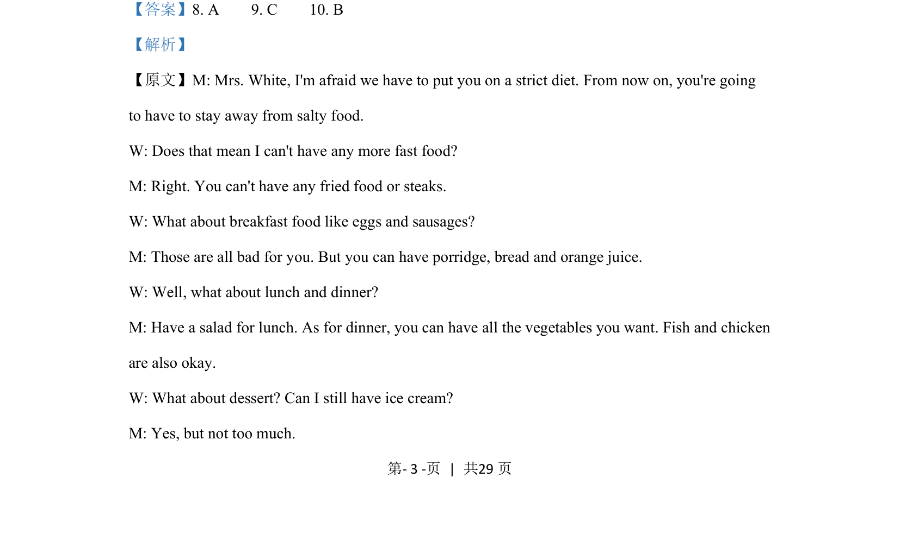

考点：听力理解 细节捕捉 逻辑推断
听力理解
细节捕捉
逻辑推断
这段对话为医生与病人的饮食建议交流，要求根据听力内容判断男士的职业。

📄 原 PDF 第 3 页：素材/真题/吉林/2008-2024·（吉林）英语高考真题/2021年高考英语试卷（全国乙卷）（新课标Ⅰ）（解析卷）.pdf
素材/真题/吉林/2008-2024·（吉林）英语高考真题/2021年高考英语试卷（全国乙卷）（新课标Ⅰ）（解析卷）.pdf